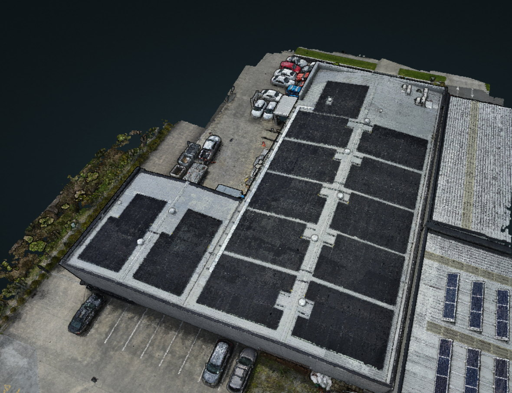

Flagship service — solar PV
Find the fault before it finds your power bill.
One dirty, shaded or failing panel can drag a whole string down. A drone flies the array in about an hour and hands you a report that points at the exact module — no cherry picker, no climbing on the roof, no shutdown.
Check What we look for
- Hot spots & electrical faults — dead or failing cells, bypass-diode failures, junction-box and string faults showing on thermal.
- Cell cracks & delamination — micro-cracking, busbar separation, moisture ingress and discolouration.
- Soiling & shading — dirt, pollen, bird droppings and lichen, plus vegetation or structures you can cut back.
- Mounting & balance-of-system — loose clamps, corrosion, missing modules, cable management, inverter-area condition.
Deliver What you get
- Visual + thermal report — every finding photographed and marked with its position on the array.
- Panel-level index — modules numbered on an array map, so a repair is never a guessing game.
- Prioritised actions — safety issues, output losses and nice-to-haves separated, with likely impact.
- A baseline for repeat surveys — year-on-year comparison so degradation and repairs are measurable.
- 01
Tell me about the array
Size, tilt, access and what you're seeing — underperformance, a fault code, or just a check-up.
- 02
Plan & fly
Airspace and site check, then a planned pass at nadir and oblique with visual and thermal payloads.
- 03
Process & analyse
Images registered, arrays numbered module by module, anomalies measured against neighbouring panels.
- 04
Report & walk-through
PDF (raw imagery too if you want it) plus a call to talk through what to fix first.


Visual & thermal on one array
Drag across — the same roof mapped in true colour and re-flown in heat. Hot strings, dirty runs and underperforming panels stand out as bright patches on the thermal side.

A digital twin of the whole site
The same flight also gives you a 3D model — roof, yard, raceways and the PV array in one file you can measure and share.
Who I do this for
Solar installers & electricians
A thermal pass over a newly installed array confirms strings, cells and connections are clean before handover — faults caught while warranty still means something.
Solar O&M contractors
Commissioning and maintenance evidence, or a subcontracted flight when your crew is already flat out.
Commercial site managers
Rooftop PV plus roof condition in one visit, with a record for insurers and capital planning.
Homeowners, farms & orchards
Pre-purchase checks, warranty claims, and “my generation dropped” — often one dirty or one bad panel. Farm sheds, barns and orchard arrays too.
Book a solar array inspection
Based in Hamilton; travel quoted for Tauranga, Bay of Plenty and the wider North Island.